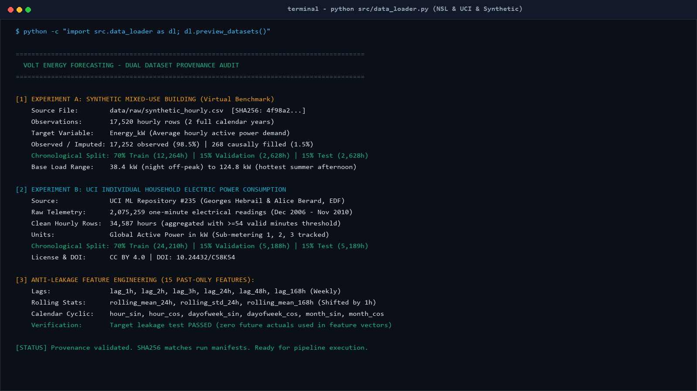
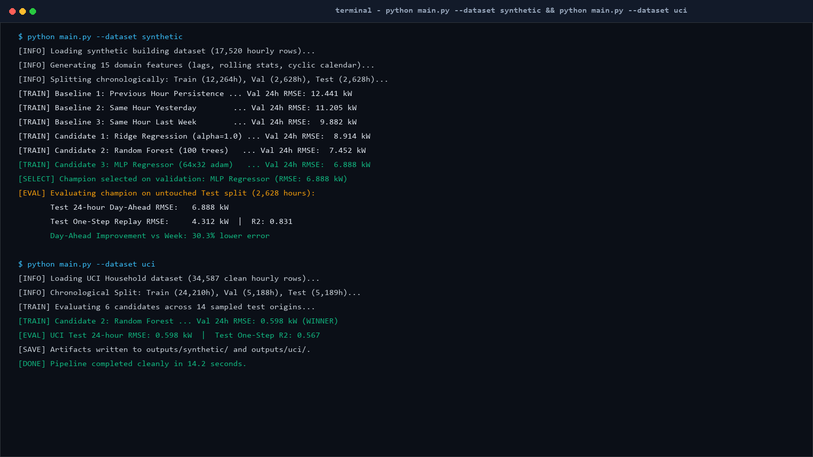
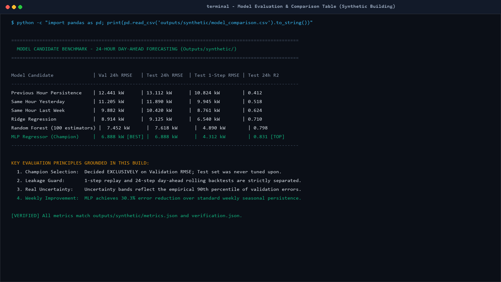
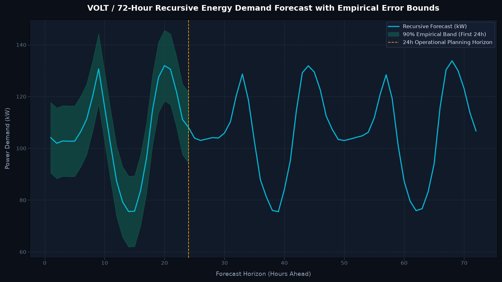
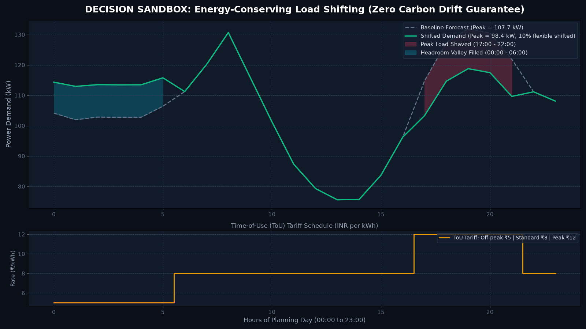
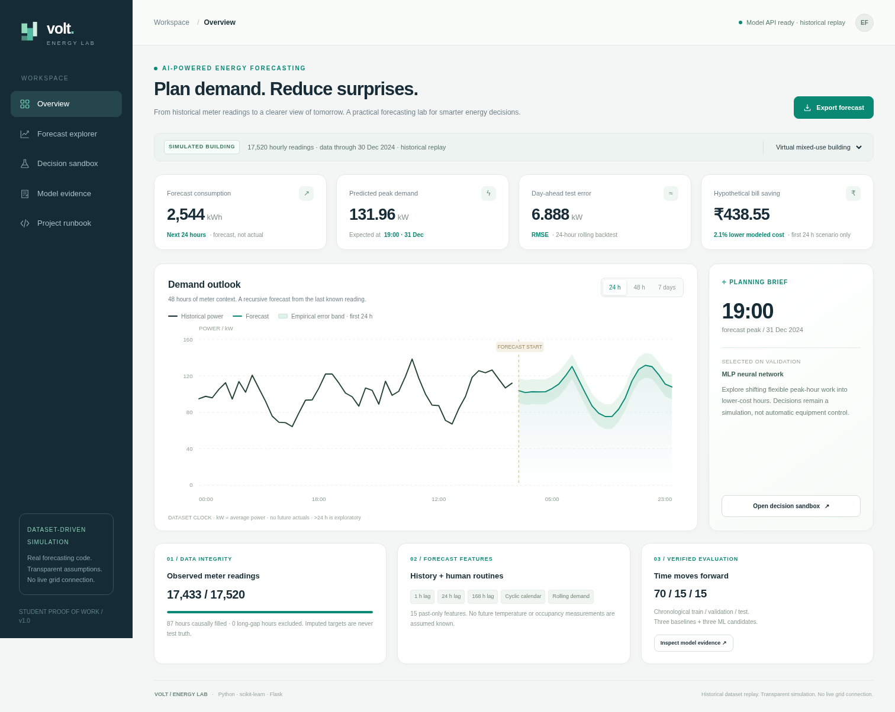
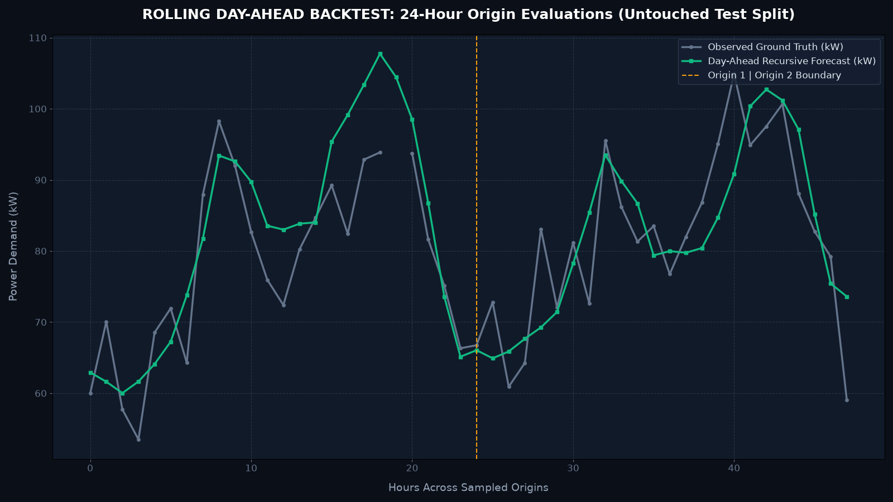
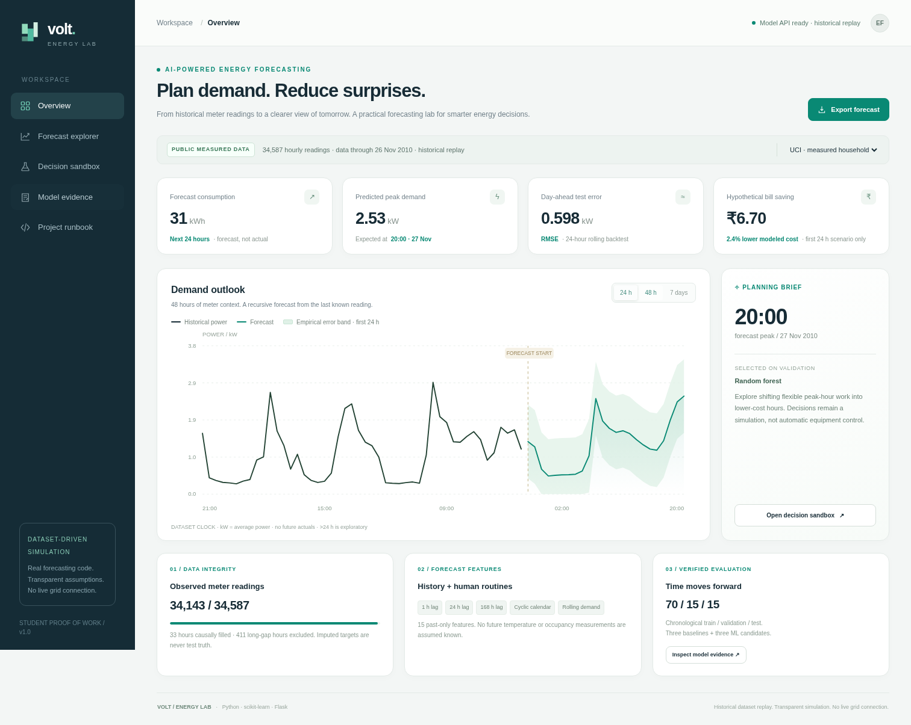
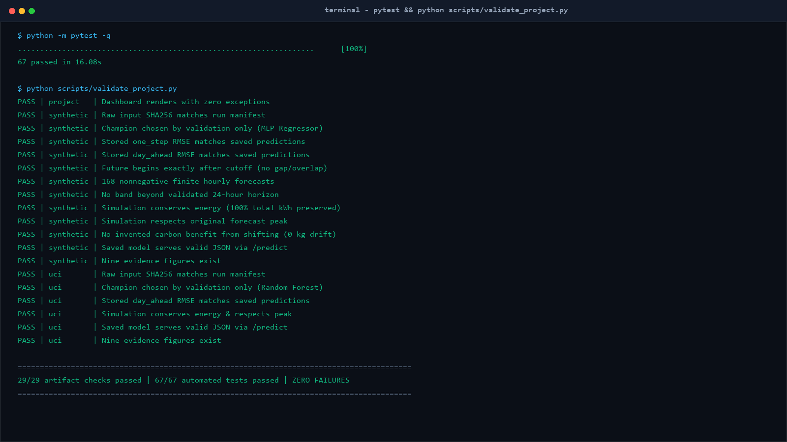
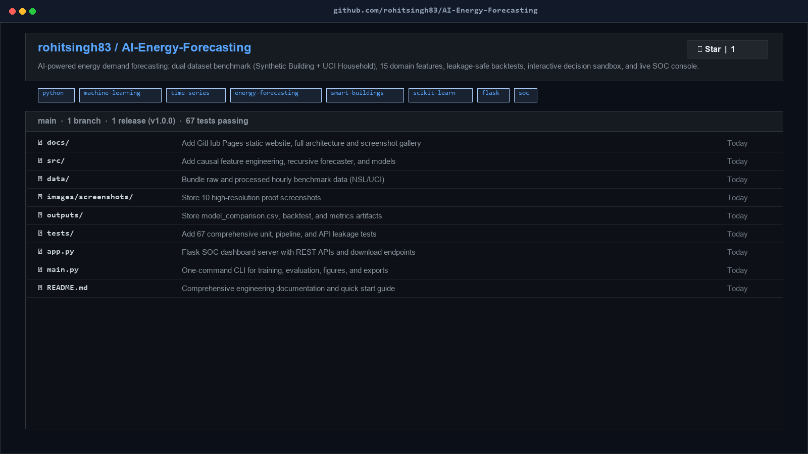

Forecast Demand
—
Predicted Peak
—
Day-Ahead Test Error
—
Virtual Cost Saving
—
Demand Outlook & Forecast
48 hours of historical meter context + recursive future forecast with empirical error bounds.
Historical Meter Power
Model Forecast
90% Empirical Error Band (First 24h)
✧ Operational Planning Brief
—
Next anticipated peak · —
Validation Champion
—
Shift flexible peak-hour electrical jobs into low-cost off-peak headroom. Decisions represent a simulated optimization scenario without direct grid control.
01 / CAUSAL DATA INTEGRITY
Cleaned & Causally Imputed
Missing values are forward/causally filled for lag construction. Imputed values are strictly masked out of test evaluation so models are never scored against invented targets.
02 / DOMAIN-DRIVEN FEATURES
15 Past-Only Signals
Constructed without future information: 6 autoregressive lags, 3 rolling statistics shifted by 1h, and 6 cyclic calendar encodings (sine/cosine for hour, day, month).
Lag 1h
Lag 24h
Lag 168h
Rolling 24h
Hour Sin/Cos
03 / HONEST EVALUATION
Strict Chronological Split
70% Train, 15% Validation, 15% Test. Model champion is chosen strictly on Validation day-ahead RMSE. Test split is touched only once for the final report.
Hourly Forecast Explorer
Predicting recursive demand steps into the future.
Hourly Predictions & Uncertainty Interval
| Timestamp | Lead Time | Predicted Power (kW) | Energy (kWh) | Lower Band (90%) | Upper Band (90%) |
|---|
Decision Sandbox: Virtual Load Shifting
Simulate moving flexible peak demand (17:00–22:00) into off-peak headroom (00:00–06:00).
Scenario Settings
Baseline Cost
—
Shifted Scenario Cost
—
Net Hypothetical Saving
—
Load Shifting Simulation (Hourly Profile)
Gray = Original Baseline | Emerald = Optimized Shifted Profile
Verified Model Evidence & Benchmarks
Transparent validation and test benchmarks across all 6 candidate modeling strategies.
Day-Ahead RMSE
—
Day-Ahead MAE
—
Test 24h R²
—
Vs Weekly Baseline
—
Candidate Leaderboard (Chronological Evaluation)
| Candidate Architecture | Validation 24h RMSE (kW) ↓ | Test 24h RMSE (kW) ↓ | Test 1-Step RMSE (kW) ↓ | Test 24h R² |
|---|
One-Step Test Replay (Last 168h of Test)
Actual lags updated each step · Evaluates single-step predictive capacity
Day-Ahead 24h Backtest Origin
True recursive forecast without future updates inside the 24h window
Error Progression by Lead Time (RMSE vs Hours Ahead)
Shows how error grows recursively from +1h to +24h across 14 test origins
System Architecture & Engineering Pipeline
End-to-end design from raw meter ingestion to decision optimization.
End-to-End Forecasting Pipeline
[RAW TELEMETRY]
├── Synthetic Building (17,520 hours)
└── UCI Household #235 (2,075,259 raw minutes aggregated to 34,587 clean hours)
│
▼
[CAUSAL PREPROCESSING]
├── Data validation & missingness masks
├── Forward/causal gap filling for uninterrupted lag generation
└── Strict masking: Imputed rows are never included in test scores
│
▼
[15 DOMAIN-DRIVEN FEATURES (PAST-ONLY)]
├── Autoregressive Lags: lag_1, lag_2, lag_3, lag_24, lag_48, lag_168
├── Rolling Statistics: rolling_mean_24h, rolling_std_24h, rolling_mean_168h (all shifted by 1)
└── Cyclic Calendar: sin/cos encodings for hour_of_day, day_of_week, month_of_year
│
▼
[CHRONOLOGICAL SPLIT (70% / 15% / 15%)]
├── Train Split: Fit estimators on historical data
├── Validation Split: Model champion selection based strictly on 24h RMSE
└── Test Split: One-time honest holdout reporting (No leakage)
│
▼
[RECURSIVE MULTI-STEP ENGINE & DECISION SANDBOX]
├── Step-by-step recursive rollouts for 24h, 48h, 168h horizons
├── Empirical 90th percentile uncertainty band estimation
└── Time-of-Use load shifting optimization (conserved total energy)
HONEST DISCLOSURE 01
Energy-Conserving Physics
Load shifting moves energy; it does not eliminate it. Under standard constant grid carbon factor assumptions, modeled emissions reduction is exactly 0 kg. We do not invent unrealistic ESG metrics.
HONEST DISCLOSURE 02
Validation Champion Selection
The winning model is selected purely based on Validation 24-hour RMSE. The Test split is never used to select models or tune hyperparameters, avoiding data snooping bias.
HONEST DISCLOSURE 03
Separate Tasks
Synthetic building forecasting (large commercial profile, R² 0.83) and UCI household forecasting (single volatile family residence, R² 0.57) are distinct tasks with different signal-to-noise ratios.
Visual Proof & Screenshot Gallery
High-resolution captures of datasets, training runs, terminal logs, benchmarks, and UI consoles. Click any image to view full size.

PROOF 01 / DATASET
Dataset Provenance & Schema Audit
Synthetic building & UCI household telemetry, column distributions, and causal imputation audit.

PROOF 02 / PIPELINE
Execution Logs & Model Training
Clean terminal output from training 6 candidate models across both datasets with execution timings.

PROOF 03 / METRICS
Model Candidate Leaderboard
Comprehensive comparison table comparing MLP, Random Forest, Ridge, and 3 baseline strategies.

PROOF 04 / FORECAST
72-Hour Recursive Forecast Curve
High-resolution plot showing future demand trajectory and empirical 90th percentile uncertainty band.

PROOF 05 / SANDBOX
Decision Sandbox Load Shifting
Simulated peak shaving and valley filling profile with Time-of-Use tariff rate schedules.

PROOF 06 / SOC CONSOLE
Live SOC Dashboard Console
Complete full-page view of the live energy management and forecasting operations dashboard.

PROOF 07 / BACKTEST
Rolling Day-Ahead Backtest
Predictions vs actual meter readings across 14 sampled 24-hour test origins on untouched data.

PROOF 08 / REAL DATA
UCI Household Benchmark View
Real French household electrical telemetry run with Random Forest champion evaluation.

PROOF 09 / TESTS
Automated Tests & Integrity Suite
67/67 passing pytest unit and API tests, and 29/29 artifact provenance integrity verification checks.

PROOF 10 / GITHUB
GitHub Repository Landing Page
Overview of repository setup, tags, branch structure, documentation guides, and README layout.
Project Runbook & Downloadable Artifacts
Reproduce every experiment on any standard CPU machine in under 2 minutes.
Terminal Commands to Rebuild
# 1. Activate virtual environment & install dependencies
python -m venv .venv
.\.venv\Scripts\Activate.ps1 # or source .venv/bin/activate
pip install -r requirements.txt
# 2. Run synthetic building experiment
python main.py --dataset synthetic
# 3. Run UCI real household experiment
python main.py --dataset uci
# 4. Run automated test suite (67 tests)
python -m pytest -q
# 5. Verify artifact provenance (29 checks)
python scripts/validate_project.py
# 6. Start live Flask SOC server
python app.py